| 項目 | 内容 |
|---|---|
| 項目 | 内容 |
| 遺伝形式 | 常染色体優性遺伝（STK11/LKB1遺伝子変異） |
| 色素斑 | 口唇・口腔粘膜・手掌・足底に黒色色素斑 |
| ポリープ | 過誤腫（Hamartoma）→小腸に多発 |
| 合併症 | 腸重積・通過障害（過誤腫が先導病変） |
| 癌化リスク | 消化器癌・乳癌・卵巣癌・子宮癌リスク↑ |
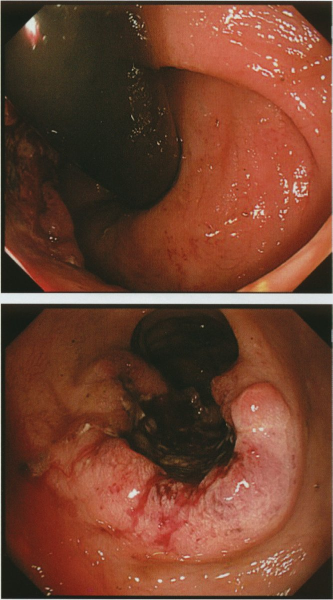
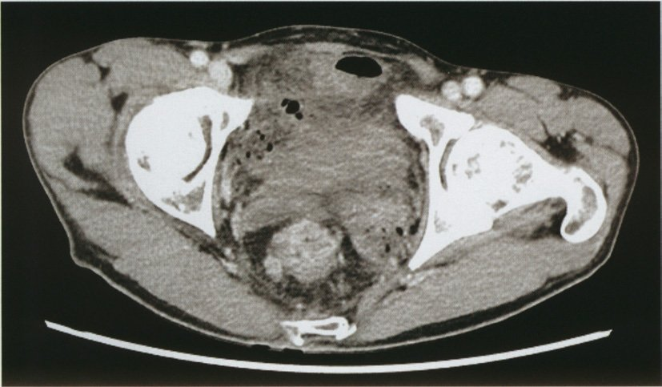
| 段階 | 特徴 |
|---|---|
| 段階 | 特徴 |
| 前悪液質 | 食欲不振・代謝変化（体重減少<5%） |
| 悪液質 | 体重減少≥5% or BMI<20でも≥2%（炎症↑・食欲↓） |
| 不応性悪液質 | PSが低い・余命<3か月（治療抵抗性） |
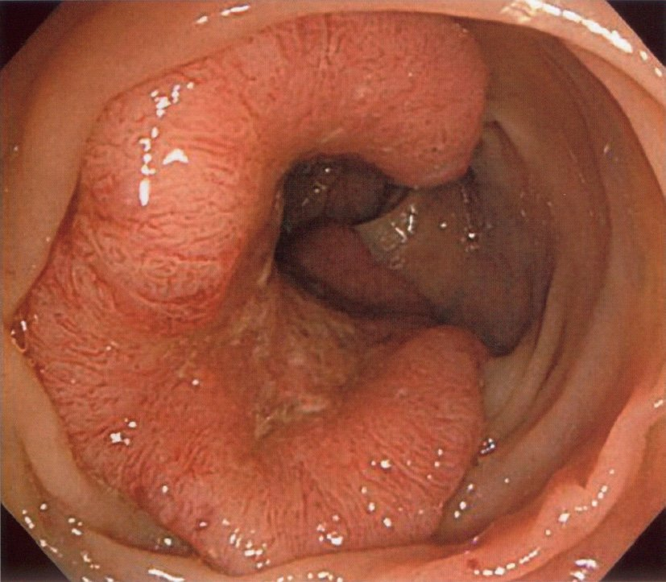
| 因子 | 評価内容 |
|---|---|
| 因子 | 評価内容 |
| T（壁深達度） | CTで壁外浸潤・周辺臓器浸潤を評価 |
| N（リンパ節） | リンパ節腫大（短径>1cm）を確認 |
| M（遠隔転移） | 肝転移（M1a）・肺転移（M1b）・腹膜播種（M1c） |
| 腹水 | 腹膜播種の間接所見として重要 |
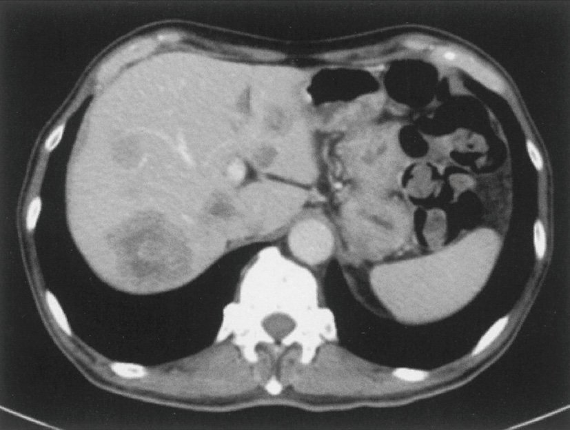
| 動脈 | 支配域 |
|---|---|
| 動脈 | 支配域 |
| 上腸間膜動脈（SMA） | 回腸・盲腸・上行結腸〜横行結腸の2/3 |
| 下腸間膜動脈（IMA） | 横行結腸の1/3〜下行結腸〜S状結腸〜直腸上部 |
| 内腸骨動脈枝 | 直腸下部・肛門 |
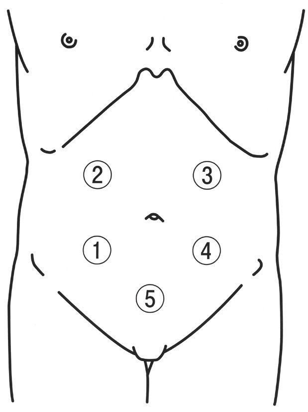
| 疾患 | 術後合併症 | 正誤 |
|---|---|---|
| 疾患 | 術後合併症 | 正誤 |
| 食道癌（誤りa） | 骨盤内膿瘍 | ✗ 嗄声（反回神経）・肺炎 |
| 食道アカラシア（誤りb） | 嗄声 | ✗ 食道アカラシア手術では嗄声は稀 |
| 胃癌（正答c） | 膵炎 | 胃癌手術で膵頭部に接近→術後膵炎・膵液漏 |
| 上行結腸癌（誤りd） | 排尿障害 | ✗ 直腸癌・前立腺手術で排尿障害 |
| 直腸癌（正答e） | 射精障害 | 骨盤神経叢（下腹神経・骨盤内臓神経）損傷→射精障害 |
| 特徴 | HNPCC | FAP |
|---|---|---|
| 特徴 | HNPCC（Lynch症候群） | FAP（家族性腺腫性ポリポーシス） |
| 遺伝子 | MLH1/MSH2（DNA修復） | APC（腫瘍抑制） |
| ポリープ | なし（非ポリポーシス） | 多発腺腫（100個以上） |
| 好発部位 | 右側結腸 | 左側結腸 |
| 発症年齢 | 40〜50代 | 20〜30代（より若年） |
| 他臓器癌 | 子宮内膜・卵巣癌等多い | 骨腫・硬腫（Gardner） |
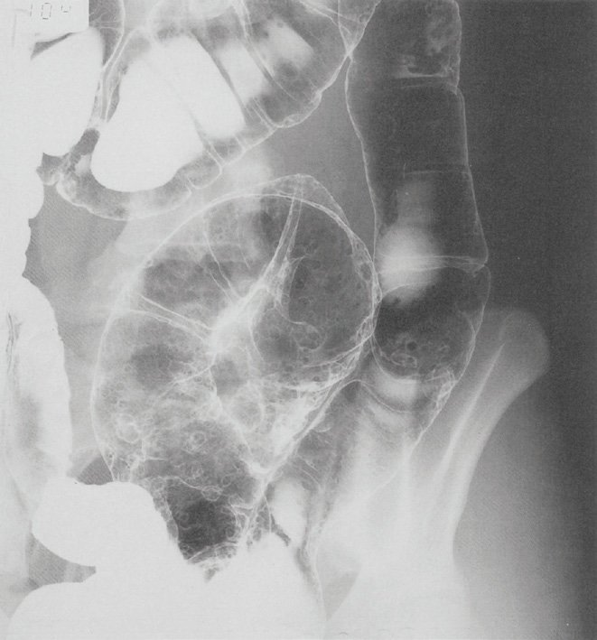
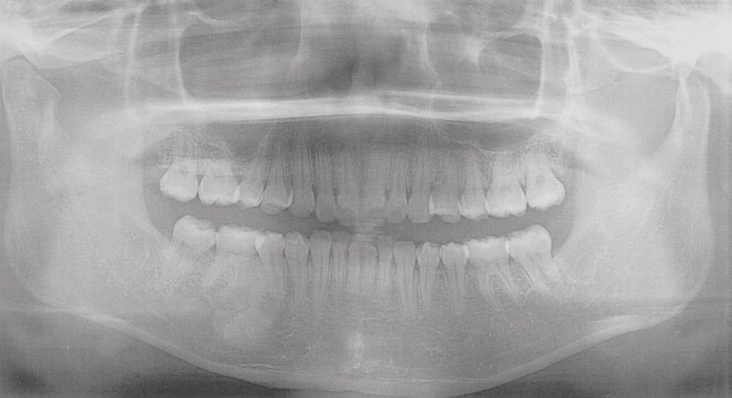
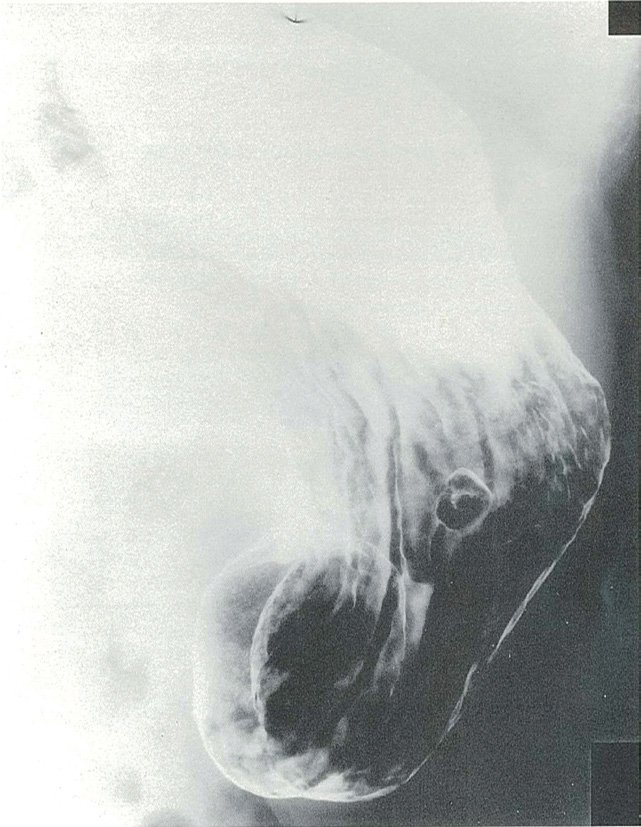
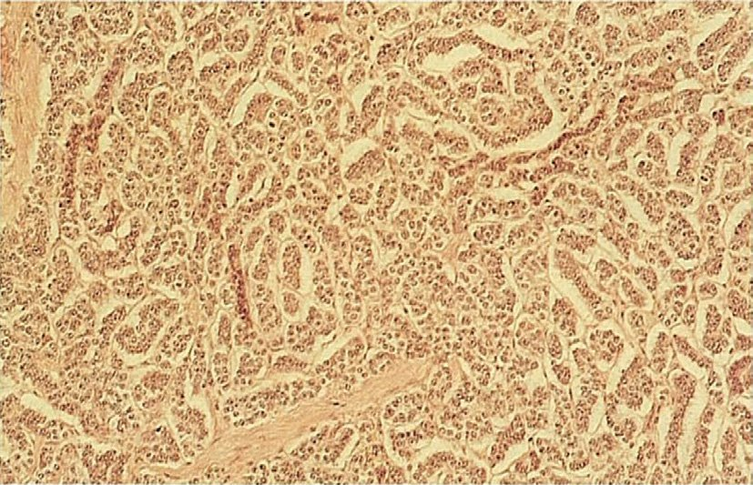
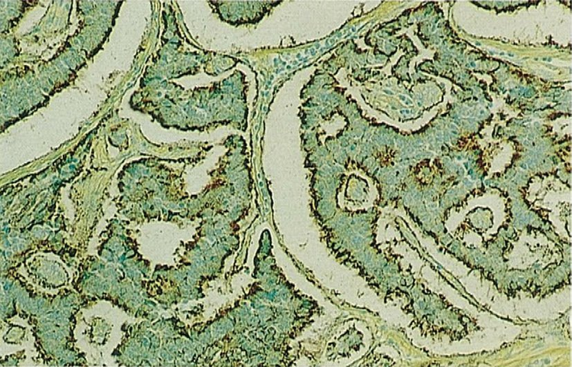
| 症状 | 機序 |
|---|---|
| 症状 | 機序 |
| 下痢 | セロトニン→腸管蠕動亢進 |
| 皮膚潮紅（flushing） | ブラジキニン・ヒスタミン→血管拡張 |
| 気管支攣縮 | ブラジキニン→気管支収縮→喘鳴 |
| 右心弁膜症 | セロトニン→三尖弁・肺動脈弁の線維化 |
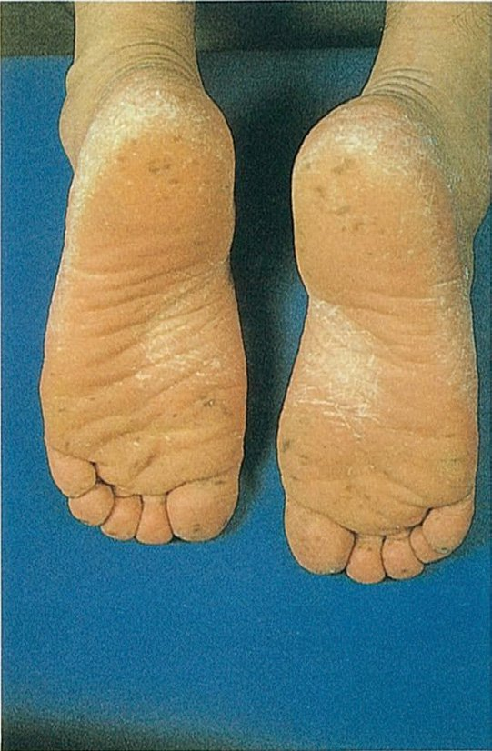
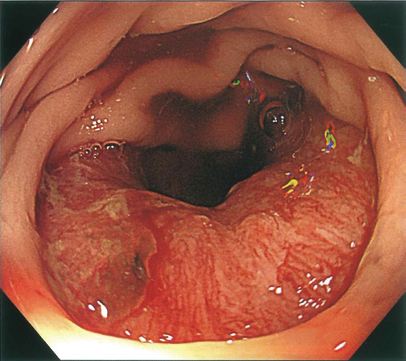
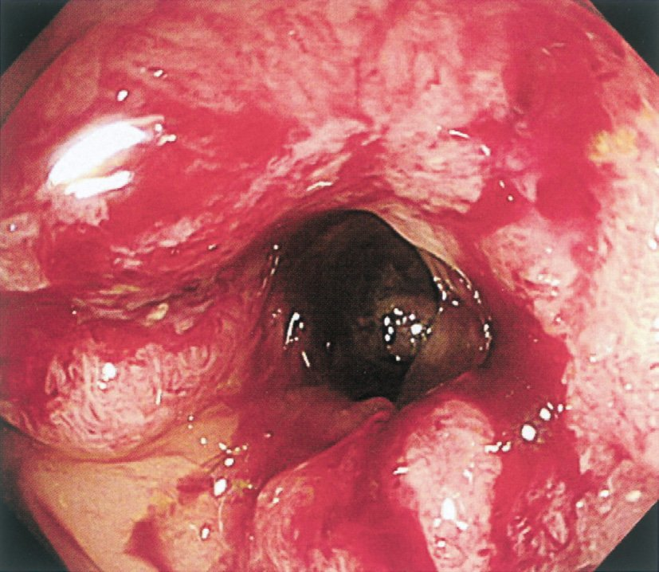
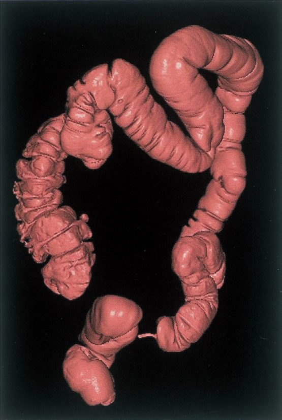
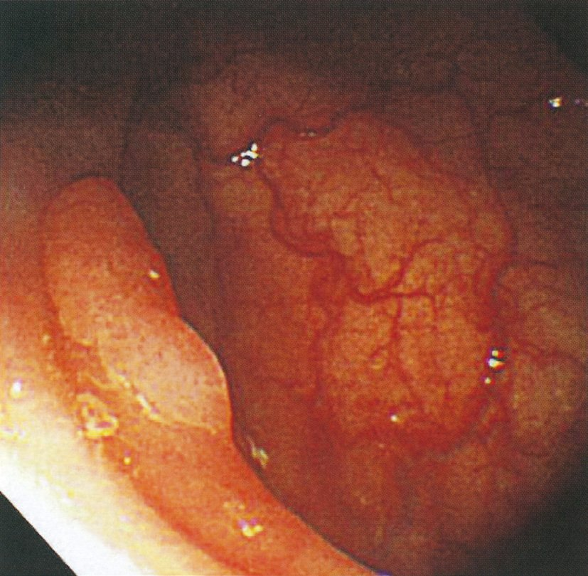
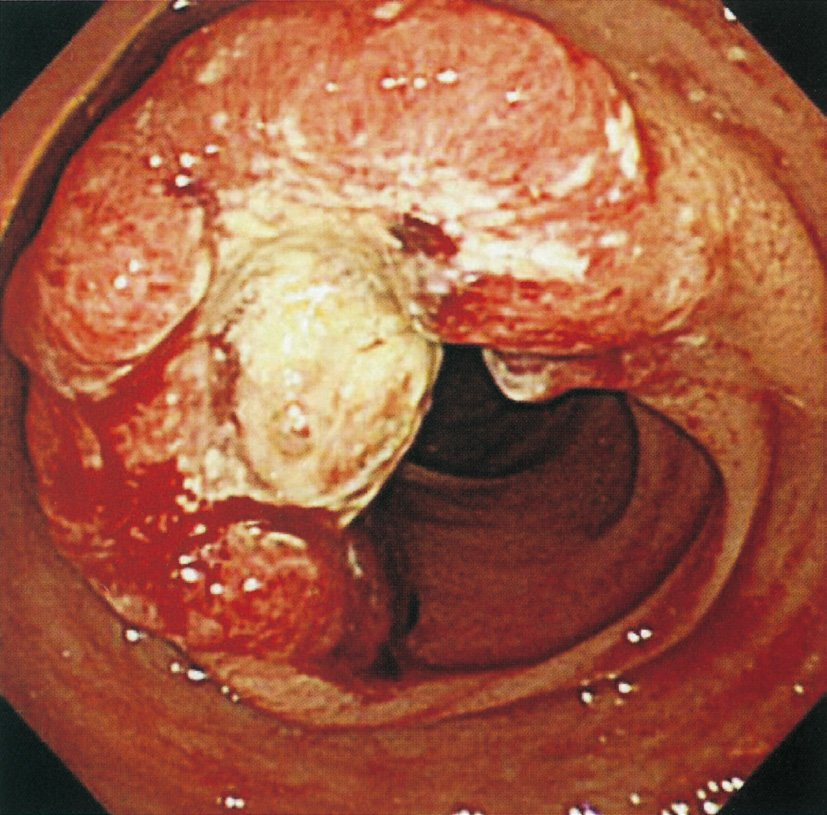
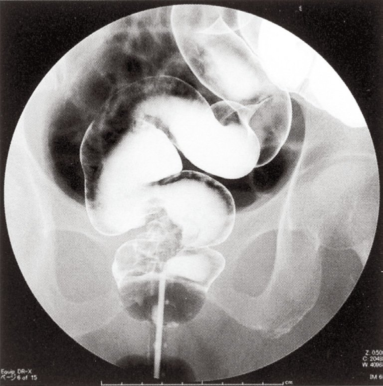
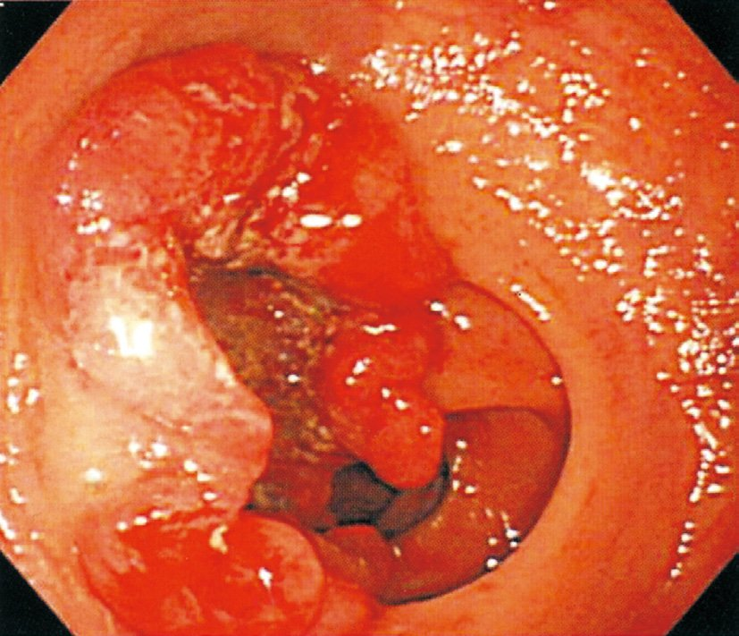
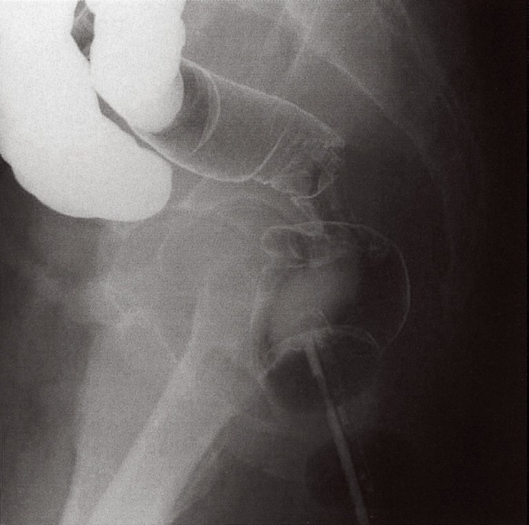
| 腫瘍位置 | 術式 | 人工肛門 |
|---|---|---|
| 腫瘍位置 | 術式 | 人工肛門 |
| Rs（肛門>10cm） | 高位前方切除術 | なし |
| Ra（肛門5〜10cm） | 低位前方切除術（LAR） | 一時的人工肛門（必要な場合） |
| Rb（肛門<5cm） | 腹会陰式直腸切断術（Miles手術） | 永久人工肛門 |
| Stage | 基準 |
|---|---|
| Stage | 基準 |
| I | T1-2, N0, M0（粘膜〜固有筋層・リンパ節転移なし） |
| II | T3-4, N0, M0（漿膜以遠浸潤・リンパ節転移なし） |
| III | 任意T, N1-2, M0（リンパ節転移あり） |
| IV | 任意T, 任意N, M1（遠隔転移あり） |
| 検査 | 間隔 | 目的 |
|---|---|---|
| 検査 | 間隔 | 目的 |
| 腫瘍マーカー（CEA・CA19-9） | 3〜6か月毎 | 再発の早期発見 |
| 腹部CT | 6〜12か月毎 | 肝転移・リンパ節再発 |
| 胸部X線・CT | 6〜12か月毎 | 肺転移 |
| 大腸内視鏡 | 1〜3年毎 | 異時性多発癌・吻合部再発 |
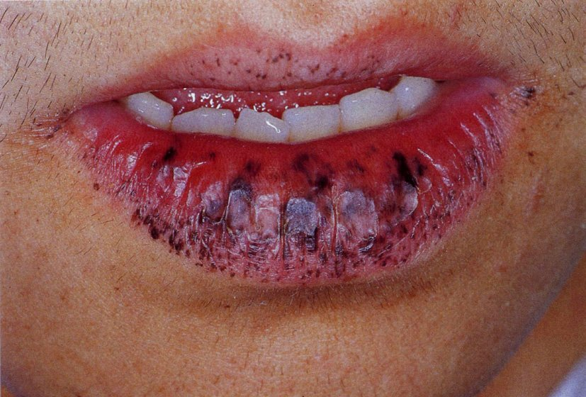
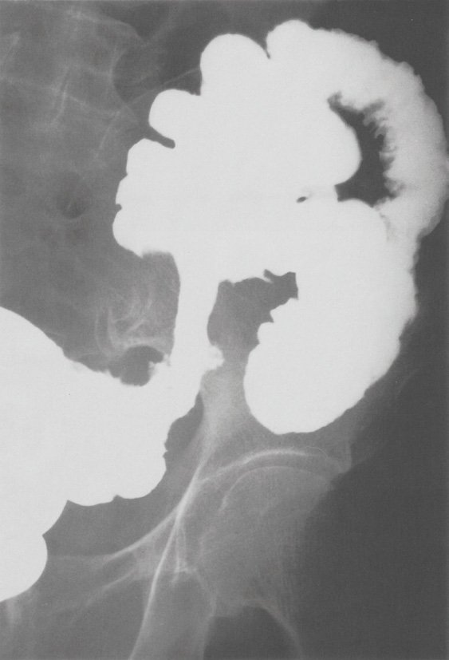
| マーカー | 主な癌 |
|---|---|
| マーカー | 主な癌 |
| CEA | 大腸癌・胃癌・肺癌（腺癌） |
| CA19-9 | 膵癌・大腸癌・胆管癌 |
| AFP | 肝細胞癌・胚細胞腫瘍 |
| PIVKA-II | 肝細胞癌 |
| CA125 | 卵巣癌 |
| PSA | 前立腺癌 |
| SCC | 扁平上皮癌（食道・肺・子宮頸） |
| 症状 | 産生物質 |
|---|---|
| 症状 | 産生物質 |
| 皮膚潮紅（flushing） | ブラジキニン・ヒスタミン・セロトニン |
| 下痢 | セロトニン（腸管蠕動亢進） |
| 喘鳴（気管支収縮） | ブラジキニン・セロトニン |
| 右心弁膜症 | セロトニン（三尖弁・肺動脈弁線維化） |